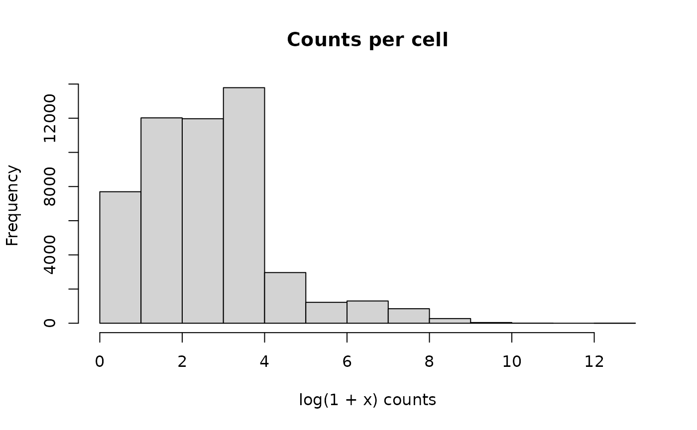

A. Data Discovery and Retrieval
Source:vignettes/a_discovery_and_retrieval.Rmd
a_discovery_and_retrieval.RmdCxGcensus is an alternative R client to the CELLxGENE census. It emaphsizes use cases related to data discovery, and uses in-memory and on-disk caches to reduce latency associated with repeated queries.
Installation
Install CxGcensus from GitHub with:
## install.packages("devtools")
devtools::install_github("mtmorgan/CxGcensus")Data exploration
Load the package
This is the census and package versions we are using
census()$get_metadata() |>
lapply(as.vector) |>
str()
#> List of 4
#> $ created_on : chr "2023-07-25T13:50:53+00:00"
#> $ git_commit_sha : chr "75c2fc7"
#> $ soma_encoding_version: chr "1"
#> $ soma_object_type : chr "SOMACollection"
packageVersion("CxGcensus")
#> [1] '0.0.0.9025'
tiledbsoma::show_package_versions()
#> tiledbsoma: 0.99.1
#> tiledb-r: 0.20.1
#> tiledb core: 2.16.0
#> libtiledbsoma: libtiledb=2.16.0
#> R: R version 4.3.1 (2023-06-16)
#> OS: Ubuntu 22.04.2 LTSDiscover datasets used to construct the census
datasets()
#> # A tibble: 593 × 8
#> soma_joinid collection_id collection_name collection_doi dataset_id
#> <int> <chr> <chr> <chr> <chr>
#> 1 0 e2c257e7-6f79-487c-b81… Spatial multio… 10.1038/s4158… f171db61-…
#> 2 1 e2c257e7-6f79-487c-b81… Spatial multio… 10.1038/s4158… ecf2e08e-…
#> 3 2 e2c257e7-6f79-487c-b81… Spatial multio… 10.1038/s4158… 74cff64f-…
#> 4 3 f7cecffa-00b4-4560-a29… Mapping single… 10.1016/j.cce… 5af90777-…
#> 5 4 3f50314f-bdc9-40c6-8e4… Single-cell se… 10.1016/j.cce… bd65a70f-…
#> 6 5 e5f58829-1a66-40b5-a62… Tabula Sapiens 10.1126/scien… ff45e623-…
#> 7 6 e5f58829-1a66-40b5-a62… Tabula Sapiens 10.1126/scien… f01bdd17-…
#> 8 7 e5f58829-1a66-40b5-a62… Tabula Sapiens 10.1126/scien… e6a11140-…
#> 9 8 e5f58829-1a66-40b5-a62… Tabula Sapiens 10.1126/scien… e5c63d94-…
#> 10 9 e5f58829-1a66-40b5-a62… Tabula Sapiens 10.1126/scien… d8732da6-…
#> # ℹ 583 more rows
#> # ℹ 3 more variables: dataset_title <chr>, dataset_h5ad_path <chr>,
#> # dataset_total_cell_count <int>dataset_id and collection_id can be used in
the cellxgenedp
package for programmatic retrieval and visualization of individual
datasets.
The organisms present in the census (use these in calls to
feature_data() or observation_data()) are
available with
census_names()
#> [1] "mus_musculus" "homo_sapiens"Summarize information about cells in the census
summary_cell_counts() |>
filter(category == "sex") |>
select(
organism, label,
unique_cell_count, total_cell_count
)
#> # A tibble: 6 × 4
#> organism label unique_cell_count total_cell_count
#> <chr> <chr> <int> <int>
#> 1 Homo sapiens female 13955052 22198837
#> 2 Homo sapiens male 17152628 30950702
#> 3 Homo sapiens unknown 2256562 3251334
#> 4 Mus musculus female 1467473 1832115
#> 5 Mus musculus male 2423438 3230510
#> 6 Mus musculus unknown 192620 192620Learn about features (genes) in, e.g., homo_sapiens
datasets in the census
feature_data("mus_musculus")
#> # A tibble: 52,392 × 4
#> soma_joinid feature_id feature_name feature_length
#> <int> <chr> <chr> <int>
#> 1 0 ENSMUSG00000051951 Xkr4 6094
#> 2 1 ENSMUSG00000089699 Gm1992 250
#> 3 2 ENSMUSG00000102343 Gm37381 1364
#> 4 3 ENSMUSG00000025900 Rp1 12311
#> 5 4 ENSMUSG00000025902 Sox17 4772
#> 6 5 ENSMUSG00000104328 Gm37323 2773
#> 7 6 ENSMUSG00000033845 Mrpl15 8487
#> 8 7 ENSMUSG00000025903 Lypla1 7145
#> 9 8 ENSMUSG00000104217 Gm37988 825
#> 10 9 ENSMUSG00000033813 Tcea1 3017
#> # ℹ 52,382 more rowsObservation (cell) data annotations are available with
observation_data(). The strategy adopted is to download all
the data to a local duckdb database.
Download can be time-consuming, but the results are ‘memoised’ so
subsequent calls are more-or-less instantaneous.
mus <- observation_data("mus_musculus")
mus
#> # Source: table<obs> [?? x 21]
#> # Database: DuckDB 0.8.1 [unknown@Linux 5.15.0-1041-azure:R 4.3.1//home/runner/.cache/R/CxGcensus/80af4af4750a.duckdb]
#> soma_joinid dataset_id assay assay_ontology_term_id cell_type
#> <int64> <chr> <chr> <chr> <chr>
#> 1 0 d7291f04-fbbb-4d65-990a-f… 10x … EFO:0009899 L5/6 nea…
#> 2 1 d7291f04-fbbb-4d65-990a-f… 10x … EFO:0009899 L4/5 int…
#> 3 2 d7291f04-fbbb-4d65-990a-f… 10x … EFO:0009899 L2/3-6 i…
#> 4 3 d7291f04-fbbb-4d65-990a-f… 10x … EFO:0009899 hippocam…
#> 5 4 d7291f04-fbbb-4d65-990a-f… 10x … EFO:0009899 L6 corti…
#> 6 5 d7291f04-fbbb-4d65-990a-f… 10x … EFO:0009899 L4/5 int…
#> 7 6 d7291f04-fbbb-4d65-990a-f… 10x … EFO:0009899 L6b glut…
#> 8 7 d7291f04-fbbb-4d65-990a-f… 10x … EFO:0009899 L4/5 int…
#> 9 8 d7291f04-fbbb-4d65-990a-f… 10x … EFO:0009899 L4/5 int…
#> 10 9 d7291f04-fbbb-4d65-990a-f… 10x … EFO:0009899 L6b glut…
#> # ℹ more rows
#> # ℹ 16 more variables: cell_type_ontology_term_id <chr>,
#> # development_stage <chr>, development_stage_ontology_term_id <chr>,
#> # disease <chr>, disease_ontology_term_id <chr>, donor_id <chr>,
#> # is_primary_data <lgl>, self_reported_ethnicity <chr>,
#> # self_reported_ethnicity_ontology_term_id <chr>, sex <chr>,
#> # sex_ontology_term_id <chr>, suspension_type <chr>, tissue <chr>, …The columns available for cross-dataset analysis are
mus |>
colnames()
#> [1] "soma_joinid"
#> [2] "dataset_id"
#> [3] "assay"
#> [4] "assay_ontology_term_id"
#> [5] "cell_type"
#> [6] "cell_type_ontology_term_id"
#> [7] "development_stage"
#> [8] "development_stage_ontology_term_id"
#> [9] "disease"
#> [10] "disease_ontology_term_id"
#> [11] "donor_id"
#> [12] "is_primary_data"
#> [13] "self_reported_ethnicity"
#> [14] "self_reported_ethnicity_ontology_term_id"
#> [15] "sex"
#> [16] "sex_ontology_term_id"
#> [17] "suspension_type"
#> [18] "tissue"
#> [19] "tissue_ontology_term_id"
#> [20] "tissue_general"
#> [21] "tissue_general_ontology_term_id"It is straight-forward to summarize or query the data, e.g., for the number of different types of assays represented, or for studies of diabetes.
mus |>
count(assay, sort = TRUE)
#> # Source: SQL [9 x 2]
#> # Database: DuckDB 0.8.1 [unknown@Linux 5.15.0-1041-azure:R 4.3.1//home/runner/.cache/R/CxGcensus/80af4af4750a.duckdb]
#> # Ordered by: desc(n)
#> assay n
#> <chr> <int64>
#> 1 10x 3' v2 2815560
#> 2 10x 3' v3 1902339
#> 3 Smart-seq2 221648
#> 4 10x 5' v1 161525
#> 5 Drop-seq 80990
#> 6 Smart-seq 48972
#> 7 10x 3' v1 21421
#> 8 DroNc-seq 2768
#> 9 10x 3' transcription profiling 22
mus |>
filter(grepl("diabetes", disease)) |>
count(disease, sex, tissue)
#> # Source: SQL [2 x 4]
#> # Database: DuckDB 0.8.1 [unknown@Linux 5.15.0-1041-azure:R 4.3.1//home/runner/.cache/R/CxGcensus/80af4af4750a.duckdb]
#> disease sex tissue n
#> <chr> <chr> <chr> <int64>
#> 1 type 2 diabetes mellitus male islet of Langerhans 99747
#> 2 type 1 diabetes mellitus female islet of Langerhans 39932Use ggplot2 to visualize tissue type and assay.
library(ggplot2)
## 10 most-common tissues; total cell count
common_tissues <-
mus |>
count(tissue, sort = TRUE) |>
head(10) |>
collect() |>
pull(tissue)
## assays on each tissue
tissue_and_assay <-
mus |>
filter(tissue %in% common_tissues) |>
count(tissue, assay, sort = TRUE) |>
collect() |>
mutate(n = as.integer(n))
## visualize
ggplot(tissue_and_assay) +
aes(x = factor(tissue, levels = common_tissues), y = n, fill = assay) +
geom_bar(position="stack", stat="identity") +
labs(x = "Tissue", y = "Total cell count") +
coord_flip() +
theme(legend.position = c(.8, .7))The soma_joinid in the tibbles returned by
feature_data() and observation_data() are
important in retrieving counts.
Experiment retrieval as SingleCellExperiment
To create a Bioconductor SingleCellExperiment, perhaps for use in one of the Orchestrating Single Cell Analysis with Bioconductor (OSCA) workflows, first select desired features and observations. For illustration we choose 100 random genes
set.seed(12)
features <- feature_data("mus_musculus")
random_features <-
features |>
slice(sample(nrow(features), 100))and choose all cells from brain tissue and development stage 20 month old or latter.
observations <- observation_data("mus_musculus")
brain_20mo <-
observations |>
filter(
tissue == "brain",
development_stage == "20 month-old stage and over"
) |>
collect()Cells are from several datasets
brain_20mo |>
count()
#> # A tibble: 1 × 1
#> n
#> <int>
#> 1 52132
brain_20mo |>
count(dataset_id)
#> # A tibble: 5 × 2
#> dataset_id n
#> <chr> <int>
#> 1 3bbb6cf9-72b9-41be-b568-656de6eb18b5 38695
#> 2 58b01044-c5e5-4b0f-8a2d-6ebf951e01ff 3077
#> 3 66ff82b4-9380-469c-bc4b-cfa08eacd325 756
#> 4 98e5ea9f-16d6-47ec-a529-686e76515e39 5180
#> 5 c08f8441-4a10-4748-872a-e70c0bcccdba 4424Use these to create a SingleCellExperiment.
sce <- single_cell_experiment("mus_musculus", random_features, brain_20mo)
sce
#> class: SingleCellExperiment
#> dim: 100 52132
#> metadata(1): census_metadata
#> assays(1): counts
#> rownames: NULL
#> rowData names(4): soma_joinid feature_id feature_name feature_length
#> colnames: NULL
#> colData names(21): soma_joinid dataset_id ... tissue_general
#> tissue_general_ontology_term_id
#> reducedDimNames(0):
#> mainExpName: NULL
#> altExpNames(0):The experiment has counts() as a sparse
(dgCMatrix, from the Matrix package) matrix, with
features and observations available (as
Bioconductor DataFrame objects, rather than
tibbles) via rowData() and colData(). The data
is straight-forward to work with, e.g., removing features for which no
counts were observed…
library(SingleCellExperiment)
keep_rows <- Matrix::rowSums(counts(sce, withDimnames = FALSE)) != 0
table(keep_rows)
#> keep_rows
#> FALSE TRUE
#> 58 42
sce[keep_rows,]
#> class: SingleCellExperiment
#> dim: 42 52132
#> metadata(1): census_metadata
#> assays(1): counts
#> rownames: NULL
#> rowData names(4): soma_joinid feature_id feature_name feature_length
#> colnames: NULL
#> colData names(21): soma_joinid dataset_id ... tissue_general
#> tissue_general_ontology_term_id
#> reducedDimNames(0):
#> mainExpName: NULL
#> altExpNames(0):… or summarizing the total number of reads observed in each cell
hist(
log1p(colSums(counts(sce, withDimnames = FALSE))),
main = "Counts per cell",
xlab = "log(1 + x) counts",
)
Session information
This article was compiled with CxGcensus version 0.0.0.9025. Full session info is:
sessionInfo()
#> R version 4.3.1 (2023-06-16)
#> Platform: x86_64-pc-linux-gnu (64-bit)
#> Running under: Ubuntu 22.04.2 LTS
#>
#> Matrix products: default
#> BLAS: /usr/lib/x86_64-linux-gnu/openblas-pthread/libblas.so.3
#> LAPACK: /usr/lib/x86_64-linux-gnu/openblas-pthread/libopenblasp-r0.3.20.so; LAPACK version 3.10.0
#>
#> locale:
#> [1] LC_CTYPE=C.UTF-8 LC_NUMERIC=C LC_TIME=C.UTF-8
#> [4] LC_COLLATE=C.UTF-8 LC_MONETARY=C.UTF-8 LC_MESSAGES=C.UTF-8
#> [7] LC_PAPER=C.UTF-8 LC_NAME=C LC_ADDRESS=C
#> [10] LC_TELEPHONE=C LC_MEASUREMENT=C.UTF-8 LC_IDENTIFICATION=C
#>
#> time zone: UTC
#> tzcode source: system (glibc)
#>
#> attached base packages:
#> [1] stats4 stats graphics grDevices utils datasets methods
#> [8] base
#>
#> other attached packages:
#> [1] SingleCellExperiment_1.22.0 SummarizedExperiment_1.30.2
#> [3] Biobase_2.60.0 GenomicRanges_1.52.0
#> [5] GenomeInfoDb_1.36.1 IRanges_2.34.1
#> [7] S4Vectors_0.38.1 BiocGenerics_0.46.0
#> [9] MatrixGenerics_1.12.3 matrixStats_1.0.0
#> [11] ggplot2_3.4.2 CxGcensus_0.0.0.9025
#> [13] RcppSpdlog_0.0.14 dplyr_1.1.2
#>
#> loaded via a namespace (and not attached):
#> [1] tidyselect_1.2.0 farver_2.1.1
#> [3] blob_1.2.4 bitops_1.0-7
#> [5] urltools_1.7.3 arrow_12.0.1.1
#> [7] RCurl_1.98-1.12 fastmap_1.1.1
#> [9] duckdb_0.8.1-1 digest_0.6.33
#> [11] lifecycle_1.0.3 magrittr_2.0.3
#> [13] compiler_4.3.1 rlang_1.1.1
#> [15] sass_0.4.7 tools_4.3.1
#> [17] utf8_1.2.3 yaml_2.3.7
#> [19] data.table_1.14.8 knitr_1.43
#> [21] S4Arrays_1.0.5 labeling_0.4.2
#> [23] bit_4.0.5 spdl_0.0.5
#> [25] curl_5.0.1 DelayedArray_0.26.7
#> [27] aws.signature_0.6.0 xml2_1.3.5
#> [29] abind_1.4-5 withr_2.5.0
#> [31] purrr_1.0.1 desc_1.4.2
#> [33] triebeard_0.4.1 grid_4.3.1
#> [35] fansi_1.0.4 colorspace_2.1-0
#> [37] scales_1.2.1 cli_3.6.1
#> [39] crayon_1.5.2 rmarkdown_2.23
#> [41] ragg_1.2.5 generics_0.1.3
#> [43] tiledbsoma_0.99.1 httr_1.4.6
#> [45] DBI_1.1.3 cachem_1.0.8
#> [47] stringr_1.5.0 zlibbioc_1.46.0
#> [49] assertthat_0.2.1 XVector_0.40.0
#> [51] base64enc_0.1-3 vctrs_0.6.3
#> [53] Matrix_1.5-4.1 jsonlite_1.8.7
#> [55] bit64_4.0.5 systemfonts_1.0.4
#> [57] jquerylib_0.1.4 glue_1.6.2
#> [59] pkgdown_2.0.7 stringi_1.7.12
#> [61] gtable_0.3.3 aws.s3_0.3.21
#> [63] munsell_0.5.0 nanotime_0.3.7
#> [65] tibble_3.2.1 pillar_1.9.0
#> [67] htmltools_0.5.5 GenomeInfoDbData_1.2.10
#> [69] R6_2.5.1 dbplyr_2.3.3
#> [71] textshaping_0.3.6 rprojroot_2.0.3
#> [73] evaluate_0.21 lattice_0.21-8
#> [75] RcppCCTZ_0.2.12 highr_0.10
#> [77] cellxgene.census_0.0.0.9000 memoise_2.0.1
#> [79] tiledb_0.20.1 bslib_0.5.0
#> [81] rjsoncons_1.0.0 Rcpp_1.0.11
#> [83] xfun_0.39 fs_1.6.3
#> [85] zoo_1.8-12 pkgconfig_2.0.3